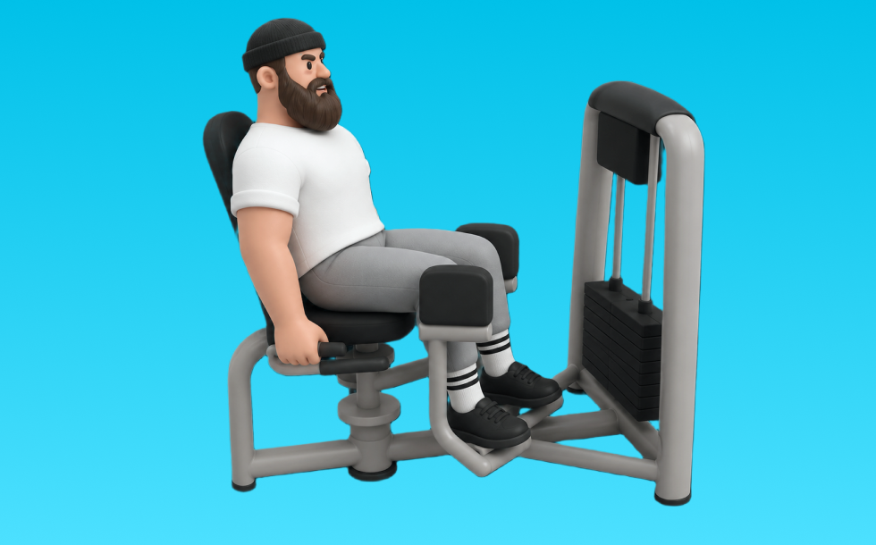

3Dマルチアブダクター

3Dマルチアブダクターとは、マシンを使って「股関節を外へ開く」動作を行い、主に臀部外側（中臀筋など）を鍛える筋力トレーニングです。座面設定や動作角度を調整しながら狙いを変えやすいのが特徴で、反動を抑えて外へ開き、コントロールして戻す動作を繰り返します。これにより、股関節の安定性向上とヒップラインの改善が期待できます。
- 対象部位
- 脚
- 器具
- マシン
- 記録形式
- 重量・回数
- 別名
- 3Dアブダクター / マルチアブダクター / 3d multi abductor
YouTube動画
-
How to PROPERLY Use The Abductor Machine (STOP DOING THIS)
-
ジムマシンの使い方！～肩のトレーニング～
-
【マシントレーニング】ジムにあるマシンの良いとこ悪いとこをトレーナーが簡単解説
YouTubeショート
-
【1分でわかる】ヒップアブダクターの使い方 #筋トレ #筋肉 #トレーニング #ジム #尻トレ#美尻
-
【ヒップアブダクターの使い方】美尻&美脚を狙うならコレ！正しいフォームで中臀筋に効かせよう🔥#阿倍野ジム
-
Hip Abduction Machine (KNOW THE DIFFERENCE!)
-
【フリーウエイトとマシンどっちがいい？初心者必見】日本人初ミスター・オリンピアに出場した、IFBBプロ・山岸プロが解説！(free weight or machine) #山岸秀匡 #筋トレ初心者
動作方法
- 対象部位の力を抜かずに構える
- 反動を使わず、可動域を丁寧に使う
- 戻し動作をゆっくり行う
動作ポイント
- 可動域を急に狭めない
- 対象部位の緊張を保つ
ワンポイントアドバイス
- ウォームアップで股関節と足首を動かす
- 高重量の日はセーフティ設定を確認する
目的別回数設定
目的や体力に応じた一般的な目安です。無理のない範囲で調整してください。
- 筋力アップ
- 1〜5回
- 筋肥大
- 6〜12回
- 持久力アップ
- 13〜20回
YouTube動画について
動画はYouTubeの公開情報をもとに表示しています。内容は投稿者によるもので、Biggrによる監修ではありません。
アプリを入手
筋トレやトレーニングの記録はBiggrにお任せください。今すぐ無料で使い始められます。